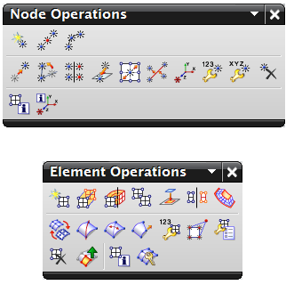

手动网格划分命令让您可以直接使用节点和单元，可以使用这些命令来：
手动修改现有有限元模型的选定区域。例如，可以使用拖动节点重定位模型中的个别节点以改善单元质量的宽高比。还可以使用分割壳之类的命令来分割所选的 2D 单元
可通过创建各个节点和单元来生成整个有限元模型。这种方法也称为“自下而上”网格划分，如果实际几何体不可用，或者可以使用梁单元来逼近几何体时，此方法非常有用
要手动创建和修改节点和单元，使用节点操作和单元操作工具条上的命令。
手动创建的节点和单元不一定与底层几何体关联。因此如果几何体更新，手动生成的节点和网格位置将不会更新。
